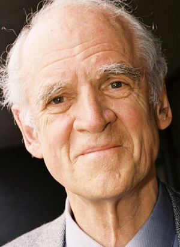

Who Is Charles Taylor?
Charles Taylor is a Canadian philosopher whose work has had a major influence on political philosophy, ethics, philosophy of religion, social philosophy, and the study of modern identity. Born in 1931, Taylor became one of the most important contemporary thinkers concerned with understanding how human beings form their identities within history, language, culture, and society.
Charles Taylor's philosophy challenges the idea that human beings can be understood as completely independent individuals. He argues that people develop their sense of self through relationships with others, through language, through moral values, and through the larger social worlds in which they live.
Taylor is especially famous for his work on modernity and secularization. In his influential book A Secular Age, he investigates how Western societies moved from a world in which belief in God was widely assumed to one in which religious belief is only one possibility among many different ways of understanding life.
His work also examines recognition, multiculturalism, authenticity, morality, language, religion, and the nature of the self. Charles Taylor remains important because he attempts to understand modern human beings not merely as economic or political individuals, but as meaning-seeking creatures shaped by history, culture, relationships, and moral commitments.
Charles Taylor: Quick Facts
- Full name — Charles Margrave Taylor
- Born — November 5, 1931
- Nationality — Canadian
- Philosophical tradition — Contemporary philosophy, communitarianism, social philosophy, and political philosophy
- Major fields — Political philosophy, ethics, philosophy of religion, social philosophy, and philosophy of language
- Major subjects — Identity, recognition, modernity, secularization, religion, morality, and authenticity
- Famous concept — The politics of recognition
- Major work — Sources of the Self
- Major work on secularization — A Secular Age
- Important political position — Criticism of excessive individualism and atomism
- Major philosophical concern — Understanding how modern people construct meaning and identity
- Important influence — Hegel, phenomenology, hermeneutics, and the philosophy of language
Charles Taylor's Early Life and Education

Charles Taylor was born in Montreal, Quebec, in 1931. His intellectual development took place within a bilingual and culturally complex Canadian environment, an experience that later contributed to his interest in language, culture, national identity, recognition, and the ways communities shape individual lives.
Taylor studied at McGill University before continuing his education at the University of Oxford. At Oxford, he encountered major traditions of twentieth-century philosophy while also developing a deep interest in continental thinkers, particularly the philosophy of Georg Wilhelm Friedrich Hegel.
His intellectual development therefore moved across philosophical traditions that were often treated separately. Taylor engaged with analytic philosophy while also drawing upon phenomenology, hermeneutics, idealism, and the historical approach associated with thinkers who attempted to understand human consciousness within its cultural and social development.
From early in his career, Taylor was concerned with questions that could not easily be answered by abstract theories alone. He wanted to understand how people actually become the persons they are and how modern societies create particular forms of identity, morality, freedom, belief, and political life.
Why Is Charles Taylor Important?
Charles Taylor is important because he developed one of the most ambitious philosophical accounts of the modern self. Rather than treating identity as something completely private or purely psychological, Taylor argues that individuals become themselves through relationships, language, culture, history, and moral frameworks.
His work also transformed discussions about secularization. Earlier theories often suggested that modernity would simply cause religion to disappear as science and rationality advanced. Taylor offered a more complex account, arguing that modern societies have changed the conditions under which people experience and understand belief itself.
Taylor also became an important critic of atomistic individualism. He questioned philosophical theories that imagine human beings as fully independent individuals who first exist alone and only later enter into relationships with society. For Taylor, social relationships are part of what makes individual identity possible.
His philosophy remains influential in debates about multiculturalism, nationalism, religion, democracy, identity politics, moral values, and the meaning of modern freedom. Taylor is therefore important not only as a philosopher of abstract ideas but also as a thinker deeply concerned with the political and cultural problems of contemporary societies.
The Historical Context of Charles Taylor's Philosophy
Charles Taylor developed his philosophy during a period marked by enormous social and political transformation. The twentieth century witnessed world wars, the expansion of democratic institutions, decolonization, globalization, technological change, and major debates about religion, culture, identity, and the future of modern society.
Philosophy itself was also divided between different traditions. Analytic philosophy often emphasized logic, language, and conceptual clarity, while continental traditions explored history, consciousness, interpretation, culture, power, and human existence. Taylor became one of the important thinkers who drew insights from both intellectual worlds.
His work also emerged during growing criticism of excessive individualism. Modern political and economic theories frequently described society as a collection of independent individuals pursuing personal interests. Taylor questioned whether this model could explain the deeper social and cultural conditions necessary for identity and freedom.
At the same time, Western societies were experiencing profound changes in religion. Traditional forms of belief remained important, but secular ways of life became increasingly powerful. Taylor's philosophy attempts to explain this transformation without simply reducing religion to ignorance or treating secularization as a simple story of inevitable progress.
Charles Taylor's Main Philosophical Ideas
1. Identity Is Socially Formed
Taylor argues that people do not create their identities entirely by themselves. Language, family, culture, history, and relationships provide the frameworks through which individuals understand who they are and what they value.
2. Recognition Matters
Human identity can be deeply affected by the recognition or misrecognition of others. Taylor argues that being treated with dignity and having one's identity acknowledged can become an important condition for human flourishing.
3. Human Beings Need Moral Frameworks
Taylor believes that people live within what he calls moral horizons. Individuals make choices by distinguishing between what they consider higher and lower, meaningful and meaningless, admirable and destructive.
4. Modernity Is Complex
Taylor rejects simple stories that describe modernity as either purely liberating or purely destructive. Modern freedom has created important possibilities for individuality, but it has also produced new forms of isolation, uncertainty, and loss of shared meaning.
5. Secularization Did Not Simply Eliminate Religion
Taylor argues that modern secular societies are not simply societies without religion. Instead, modernity has created a condition in which belief, unbelief, spirituality, and different conceptions of meaning exist together as competing possibilities.
Charles Taylor's Philosophy of the Self
The nature of the self is one of the central concerns of Charles Taylor's philosophy. Taylor rejects the image of the person as an isolated individual whose identity exists independently before entering into relationships with other people and the wider world.
Instead, Taylor argues that human beings are deeply shaped by language. People learn to understand themselves through words, concepts, stories, traditions, and conversations that already exist within the communities into which they are born and educated.
Identity also depends upon what Taylor describes as moral orientation. To know who one is, a person must usually have some understanding of what matters. People define themselves partly through commitments to family, justice, love, religion, achievement, community, or other sources of meaning.
Taylor therefore presents the self as fundamentally situated. Individuals possess freedom and can change their lives, but they do not begin from nowhere. Every person enters a historical and social world that provides languages, possibilities, identities, and moral questions through which the self develops.
Sources of the Self: The Making of the Modern Identity
Sources of the Self is one of Charles Taylor's most important philosophical works. In this major study, Taylor investigates the historical development of modern identity and asks how contemporary people came to understand themselves in ways that differ significantly from earlier societies.
Taylor argues that modern identity did not emerge suddenly from a single philosophical discovery. It developed through long historical changes involving Christianity, the Renaissance, the Enlightenment, Romanticism, science, political thought, and changing conceptions of individuality and moral responsibility.
A central idea of the book is that human beings define themselves within moral frameworks. People cannot simply choose values from an entirely neutral position because judgments about a worthwhile life already involve distinctions between what appears important, admirable, meaningful, or good.
Sources of the Self therefore combines philosophy with intellectual history. Taylor attempts to show that understanding the modern individual requires examining the historical sources from which modern ideas of freedom, inwardness, authenticity, and personal identity emerged.
Charles Taylor on Identity
Charles Taylor's theory of identity challenges the belief that identity is simply a private choice. Although individuals possess the ability to make decisions and shape their lives, Taylor argues that identity develops through a continuing relationship between the individual and the social world.
People learn languages from others, inherit traditions, enter families and communities, and encounter social expectations before they are capable of making fully independent choices. These conditions do not determine every aspect of identity, but they provide the background against which individual freedom becomes meaningful.
Taylor also emphasizes the importance of dialogue. Human beings develop their understanding of themselves through interaction with other people. A person's identity is therefore not simply discovered inside an isolated mind but is shaped through communication, recognition, disagreement, education, and social participation.
This account has become influential in contemporary discussions about cultural identity and personal authenticity. Taylor's philosophy asks whether genuine individuality requires complete independence from others or whether individuals can become themselves precisely through meaningful relationships with communities and other persons.
Charles Taylor and the Politics of Recognition
The politics of recognition is one of Charles Taylor's most widely discussed contributions to political and social philosophy. Taylor argues that recognition is not merely a matter of politeness or social approval; it can play an important role in the formation of individual and collective identity.
Misrecognition can harm people when individuals or communities are repeatedly represented as inferior, invisible, abnormal, or insignificant. Taylor argues that social identities are partly shaped through interaction with others, meaning that distorted recognition can influence how people understand themselves.
This idea became especially important in discussions about multiculturalism. Modern societies often contain communities with different languages, histories, religions, and cultural traditions. Taylor asks whether political equality requires treating every person in exactly the same way or whether justice sometimes requires recognizing important differences.
His theory remains influential but controversial. Supporters argue that it provides a deeper understanding of cultural dignity and identity, while critics worry that political systems based too strongly on recognition may create new conflicts concerning which identities deserve special public acknowledgement.
Charles Taylor and Communitarianism
Charles Taylor is often associated with communitarianism, a philosophical approach that criticizes highly individualistic theories of society. Communitarian thinkers emphasize that individuals are embedded within families, communities, traditions, languages, and institutions that contribute to the formation of their identities.
Taylor does not simply reject individual freedom. Instead, he asks what conditions make meaningful freedom possible. If individuals are understood as completely detached from all social relationships, then philosophy may ignore the communities and cultural resources that help people develop values, identities, and the ability to make choices.
His criticism is particularly directed toward atomism, the view that society can be understood primarily as a collection of separate individuals. Taylor argues that many human capacities, including language and moral understanding, develop only through participation in shared forms of life.
Communitarianism therefore does not necessarily mean that the individual should be completely subordinated to society. Taylor's philosophy attempts to balance personal freedom with recognition of the social relationships and cultural communities that make individual identity possible in the first place.
Charles Taylor's Philosophy of Modernity
Modernity is one of the central themes of Charles Taylor's philosophy. Taylor attempts to understand the enormous transformation through which modern societies developed new ideas about freedom, individuality, religion, morality, politics, and the meaning of human life.
Taylor rejects the idea that modernity has a single meaning. Modern societies have created important forms of personal freedom and individual self-expression, but they have also weakened some traditional sources of shared meaning and created new experiences of isolation and uncertainty.
He is particularly interested in the rise of the modern individual. Earlier societies often understood persons primarily through their place within religious, political, or social hierarchies. Modern people increasingly understand themselves as individuals with an inner life and the right to shape their own paths.
Taylor's analysis is therefore neither a simple celebration nor a complete rejection of modernity. He believes modern freedom contains genuine achievements, but he also warns that a society focused exclusively on personal preference may lose the moral and social horizons that help individuals understand why certain choices matter.
Charles Taylor on Authenticity
Authenticity is an important concept in Charles Taylor's philosophy of modern identity. Modern individuals often believe that they should live according to their own deepest values rather than simply obeying traditions or social expectations without reflection.
Taylor does not reject this ideal. He believes the desire to live authentically represents an important development in modern moral consciousness. However, he criticizes superficial versions of authenticity that reduce the idea to doing whatever one happens to want at a particular moment.
Genuine authenticity, according to Taylor's broader philosophy, requires orientation toward things that matter beyond arbitrary personal preference. A meaningful identity develops through relationships, commitments, moral questions, and forms of life that provide individuals with reasons for considering some choices more significant than others.
Taylor therefore distinguishes authenticity from simple selfishness. Becoming true to oneself does not necessarily mean ignoring everyone else. Because identity is dialogical, personal authenticity can involve relationships, responsibilities, cultural belonging, and engagement with values that individuals recognize as genuinely important.
Charles Taylor's Philosophy of Morality
Charles Taylor argues that human beings cannot live entirely without moral distinctions. People constantly evaluate actions, relationships, goals, and ways of life. Even individuals who reject traditional moral systems usually continue to make judgments about dignity, suffering, freedom, justice, or authenticity.
Taylor uses the idea of strong evaluation to describe the way human beings distinguish between different kinds of desires and commitments. People do not merely ask what they want; they also ask whether certain desires are worthy, admirable, shallow, harmful, meaningful, or consistent with the person they want to become.
This means that human identity is connected with moral orientation. A person cannot fully explain who they are simply by listing their preferences. Identity also involves understanding which values, relationships, ideals, and commitments provide a sense of direction within life.
Taylor's moral philosophy therefore opposes the idea that all values are merely subjective preferences with no deeper structure. Although people and cultures disagree about moral questions, Taylor argues that human life is nevertheless organized around attempts to understand what is genuinely good and worth pursuing.
Charles Taylor on Language
Language plays a fundamental role in Charles Taylor's understanding of human beings. People do not simply use language as a technical tool for exchanging information. Language helps make thought, identity, emotion, social relationships, and shared forms of meaning possible.
Human beings learn to describe themselves through languages that already exist within communities. Words provide distinctions that make it possible to identify experiences, values, relationships, and moral problems. In this sense, language helps shape the very world through which people understand themselves.
Taylor's interest in language is connected with his criticism of extreme individualism. A person cannot invent an entire language alone and then use it to construct an identity from nothing. Communication depends upon shared meanings that develop historically between people.
This philosophical view also supports Taylor's understanding of identity as dialogical. People become themselves partly through conversations with others. Language therefore connects the individual mind with history, culture, community, and the wider social world.
Charles Taylor's Philosophy of Religion
Religion occupies a central place in Charles Taylor's philosophical work. Taylor is interested not only in whether religious beliefs are true but also in understanding how different historical societies make religious belief possible, natural, difficult, attractive, or controversial.
Taylor criticizes simplistic explanations that treat religion as a temporary stage of ignorance destined to disappear through scientific progress. Modern societies have certainly changed the role of religion, but Taylor argues that religious belief has not simply vanished from human life.
Instead, modernity has produced a more diverse field of belief. Individuals may encounter religious traditions, atheism, agnosticism, spirituality, humanism, and many other ways of understanding existence within the same society.
Taylor's philosophy of religion therefore examines belief as part of human experience and historical development. He asks what it feels like to live in a world where belief in God is no longer socially unavoidable but remains one important possibility among many competing interpretations of reality.
Charles Taylor and Secularization
Secularization is one of the subjects for which Charles Taylor is most famous. Traditional accounts often describe secularization as the gradual disappearance of religion from modern society as science, technology, and rational institutions become more powerful.
Taylor develops a more complicated account. He agrees that modern societies differ greatly from earlier religious societies, but he argues that secularization involves more than declining church attendance or the separation of religious institutions from political power.
For Taylor, one of the deepest changes concerns the conditions of belief. In earlier periods of Western history, belief in God could appear almost unavoidable within many social environments. Modern individuals, however, encounter numerous alternatives and may experience belief as one option among many.
Secularization therefore changes both believers and nonbelievers. Religious people must often understand their faith within societies where disbelief is visible and intellectually available, while nonreligious people live in cultures still shaped by religious histories, traditions, languages, and moral ideas.
Charles Taylor's A Secular Age
A Secular Age is Charles Taylor's major work on religion and modernity. The book investigates how Western societies moved from conditions in which belief in God was widely taken for granted to conditions in which both belief and unbelief have become possible ways of understanding the world.
Taylor's central question is not simply why fewer people may attend religious institutions. Instead, he asks what historical changes made it possible for large numbers of people to imagine a meaningful human life without religious belief while others continued to find religious faith deeply convincing.
The book examines long historical transformations involving Christianity, political institutions, science, individualism, humanism, morality, and changing ideas about nature. Taylor attempts to explain how modern Western consciousness developed without reducing this process to a single cause.
A Secular Age became one of the most influential modern works on secularization and religion. Its importance lies partly in its complexity: Taylor rejects the simple assumption that modernity and religion are natural enemies and instead examines the many different ways belief and unbelief coexist.
The Immanent Frame in Charles Taylor's Philosophy
One important concept associated with Charles Taylor's account of secular modernity is the immanent frame. This idea describes a modern social and intellectual framework in which people can understand the world primarily through natural, human, and worldly explanations without necessarily referring to a transcendent reality.
The immanent frame does not force every individual to become nonreligious. A person can live within a modern society shaped by scientific and secular institutions while continuing to believe in God, spiritual realities, or forms of transcendence beyond the material world.
What changes is the background against which belief occurs. Modern people are often aware that alternative interpretations of reality exist. Religious belief therefore takes place alongside secular explanations rather than within a social world where one religious interpretation is nearly unquestioned.
Taylor's concept helps explain why modern debates about religion are often more complicated than simple arguments between belief and disbelief. People may share scientific knowledge and political institutions while interpreting existence through very different metaphysical, religious, and moral frameworks.
Charles Taylor on Freedom
Charles Taylor believes that freedom should not be understood only as the absence of external interference. Although protection from oppression is essential, Taylor argues that a richer understanding of freedom must also ask whether people possess the capacities and social conditions necessary to direct their lives meaningfully.
A person may technically possess many choices while lacking a clear understanding of what matters. Taylor therefore connects freedom with self-understanding, moral orientation, education, language, and the ability to participate in forms of life that provide genuine possibilities for development.
His theory challenges the assumption that more choices automatically create greater freedom. An unlimited collection of options can become meaningless if individuals have no framework for understanding why one possibility should matter more than another.
Taylor's philosophy therefore presents freedom as connected with human flourishing. Genuine freedom involves the capacity to act, reflect, evaluate, and pursue meaningful goals rather than merely existing in a condition where no one directly prevents a person from making arbitrary choices.
Charles Taylor and Hegel
Georg Wilhelm Friedrich Hegel was one of the most important philosophical influences on Charles Taylor. Taylor wrote a major study of Hegel and drew upon Hegelian ideas about history, recognition, social institutions, and the development of human consciousness.
One important Hegelian influence appears in Taylor's rejection of the isolated individual. Hegel argued that human freedom develops within social institutions and relationships rather than existing completely outside them. Taylor develops related insights within contemporary debates about identity and political life.
Taylor is also interested in Hegel's historical approach to philosophy. Rather than treating all ideas as timeless abstractions, both thinkers investigate how forms of consciousness and social understanding develop through historical change.
Taylor does not simply repeat Hegel's philosophical system. However, his work continues the broader Hegelian attempt to understand individuals within the historical and social worlds that make their identities, freedoms, and forms of consciousness possible.
Charles Taylor's Criticism of Individualism
Charles Taylor is a major critic of extreme forms of individualism. He does not oppose individuality itself, and he recognizes the importance of modern freedom and personal self-expression. His criticism is directed instead toward the belief that individuals are completely self-created and independent of social relationships.
Taylor argues that such an image ignores the origins of human identity. People inherit languages, enter families, learn cultural traditions, and develop their capacities through interaction with others. The very ability to describe oneself as an independent individual depends upon social resources.
Extreme individualism can also weaken the sense of common purpose within democratic societies. If citizens understand every institution only in terms of private advantage, it may become more difficult to sustain public responsibilities and shared commitments.
Taylor therefore seeks a balance between individuality and community. Human beings should have the freedom to develop their own lives, but philosophy should also recognize that personal identity and freedom depend upon social relationships that individuals do not create alone.
Charles Taylor and Multiculturalism
Charles Taylor became an influential philosopher in debates about multiculturalism. Modern societies often contain people with different cultural histories, languages, religions, and traditions, creating difficult questions about equality, citizenship, public recognition, and national identity.
Taylor argues that equality should not always be understood as the requirement that every difference must disappear from public life. Some individuals and communities believe that important aspects of their identity deserve recognition rather than pressure to conform completely to a dominant cultural model.
His philosophy therefore examines the tension between universal equality and cultural difference. A democratic society must protect equal rights, but it must also decide how cultural identities can exist within a shared political community.
These ideas remain highly relevant to contemporary debates concerning immigration, minority rights, indigenous communities, language, religion, nationalism, and identity politics. Taylor's work does not provide a simple solution, but it offers a philosophical framework for understanding why recognition has become such an important political issue.
Charles Taylor and Secular Humanism
Charles Taylor takes secular humanism seriously as one of the major moral and intellectual possibilities of modern life. He does not simply dismiss nonreligious worldviews as shallow or irrational. Instead, he investigates the historical development of modern forms of humanism and the moral ideals that support them.
Modern secular humanism often emphasizes human dignity, freedom, equality, and the reduction of suffering. Taylor recognizes the moral power of these commitments and examines how they developed through complex interactions between religious traditions and modern philosophical movements.
At the same time, Taylor questions whether purely secular frameworks always provide satisfying answers to every human desire for meaning, transcendence, and spiritual depth. His analysis explores the continuing tensions between immanent forms of meaning and religious conceptions of reality.
Taylor's approach is therefore more nuanced than a simple opposition between religion and secularism. He studies both as serious attempts to understand human existence and asks why different individuals find different moral and spiritual frameworks convincing.
Charles Taylor's Political Philosophy
Charles Taylor's political philosophy examines the relationship between individual freedom, community, identity, and democratic life. He questions political theories that attempt to create a completely neutral public space by ignoring the historical and cultural backgrounds through which citizens actually understand themselves.
Taylor believes democratic societies require more than formal rules. They also depend upon relationships of trust, shared institutions, public participation, and a willingness among citizens to recognize one another as members of a political community.
His work is particularly important for debates about liberalism and communitarianism. Liberal political theory often emphasizes individual rights and neutrality, while communitarian approaches emphasize social belonging and shared goods. Taylor attempts to show why both individual freedom and social belonging must be taken seriously.
Political life, in Taylor's view, cannot be understood entirely through economic interests or legal rules. Citizens also possess identities, histories, moral commitments, languages, and cultural attachments that influence how they understand justice and their place within society.
Charles Taylor and Ethics
Ethics is central to Charles Taylor's philosophical project. Taylor believes that human beings are constantly engaged in evaluating their lives, even when they claim to reject traditional moral systems. People still distinguish between actions they admire and actions they consider degrading, harmful, courageous, meaningful, or empty.
Taylor criticizes moral theories that attempt to explain all ethical life through a single abstract principle. Human moral experience is historically complex and involves relationships, identities, traditions, emotions, commitments, and different conceptions of human flourishing.
His ethical philosophy also emphasizes the importance of goods. People orient themselves toward things they consider worthwhile, such as justice, love, truth, dignity, freedom, beauty, community, or spiritual fulfillment.
Taylor therefore understands ethics as connected with the larger question of what kind of person one wants to become. Moral philosophy should not only tell people which actions are permitted or forbidden; it should also investigate the deeper frameworks through which human beings understand a meaningful and worthwhile life.
Charles Taylor and the Problems of Modern Life
Charles Taylor has written extensively about what might be called the malaise of modernity. Modern societies have created extraordinary forms of freedom, wealth, scientific knowledge, and individual possibility, yet many people continue to experience alienation, isolation, and uncertainty about meaning.
One problem concerns excessive individualism. When people are encouraged to treat personal preference as the highest authority, they may lose contact with communities, traditions, and moral commitments that provide a deeper sense of belonging.
Another problem concerns instrumental reason. Modern institutions can become increasingly focused on efficiency, calculation, technology, and control. These methods are powerful, but Taylor warns that human life cannot be completely understood through questions about what is most efficient or economically useful.
Taylor's criticism is not a call to return completely to the past. He seeks to understand how modern societies can preserve the achievements of freedom while resisting forms of individualism and instrumentalism that reduce the richness of human moral and social life.
Major Works of Charles Taylor
- Sources of the Self — A major philosophical and historical study of the development of modern identity, morality, inwardness, and the modern understanding of the self.
- A Secular Age — Taylor's influential investigation of secularization, religion, belief, unbelief, and the historical transformation of Western society.
- Hegel — A major study of Hegel's philosophy and one of the important works connecting Taylor with the history of German idealism.
- The Ethics of Authenticity — A philosophical discussion of modern individualism, authenticity, freedom, and the moral problems of contemporary life.
- Multiculturalism and "The Politics of Recognition" — An influential contribution to debates about identity, recognition, equality, cultural difference, and political life.
- Modern Social Imaginaries — A study of how modern societies developed shared understandings of political and social life.
- The Language Animal — A philosophical exploration of language and its importance for human thought, identity, meaning, and social existence.
Charles Taylor's Most Important Concepts
The Politics of Recognition
The idea that recognition and misrecognition can influence individual and collective identity, making social acknowledgement an important philosophical and political issue.
The Dialogical Self
Human identity develops through relationships and dialogue with others. Individuals do not create themselves entirely in isolation from language, culture, and community.
Strong Evaluation
Human beings do not merely experience desires; they evaluate their desires and distinguish between what they consider more worthy, meaningful, admirable, or worthwhile.
Social Imaginary
The shared background of images, assumptions, expectations, and understandings through which ordinary people imagine how their society works.
The Immanent Frame
A modern framework in which people can understand reality primarily through natural and worldly explanations while religious and transcendent interpretations remain possible.
Authenticity
The modern ideal of living in a way that is genuinely connected with one's deepest identity and values rather than merely following inherited expectations without reflection.
Criticism of Atomism
Taylor's rejection of the idea that human beings can be adequately understood as completely independent individuals existing separately from the social relationships that form identity.
Charles Taylor's Influence and Legacy
Charles Taylor has influenced a wide range of disciplines beyond philosophy. His ideas have been discussed in political theory, sociology, religious studies, psychology, cultural studies, history, anthropology, and debates concerning multiculturalism and modern identity.
In political philosophy, Taylor's work helped shape discussions about communitarianism, recognition, cultural difference, and the relationship between individuals and communities. His arguments remain central to debates about whether liberal societies can be genuinely neutral toward the different identities and values of their citizens.
His work on secularization has also had enormous influence. Scholars of religion continue to engage with A Secular Age when examining the relationship between modernity, belief, spirituality, atheism, and changing forms of religious life.
Taylor's broader legacy lies in his attempt to reconnect philosophy with history and lived experience. He demonstrates that questions about identity, morality, freedom, and belief cannot always be solved by abstract analysis alone because these ideas develop within concrete historical and cultural worlds.
Criticisms of Charles Taylor's Philosophy
Charles Taylor's philosophy has received criticism from several directions. Some liberal philosophers argue that his emphasis on community and cultural identity may threaten individual autonomy if collective traditions are given too much authority over the choices of particular individuals.
His theory of recognition has also generated debate. Critics ask how political institutions can recognize important cultural differences without creating rigid categories or encouraging individuals to define themselves primarily through group identities.
Some scholars also criticize Taylor's historical narratives for being extremely broad. His accounts of the development of modern identity and secularization cover many centuries and intellectual movements, making it difficult for every reader to accept all aspects of his interpretation.
Nevertheless, these criticisms demonstrate the scale of Taylor's influence. His work raises questions that remain central to contemporary society: How should people balance individuality and belonging? How should cultures coexist? What gives modern life meaning? And what does it mean to live in a secular age?
Charles Taylor's Philosophy Explained Simply
- What did Charles Taylor believe about identity? Taylor believed that people do not form their identities completely alone. Language, relationships, culture, history, and moral values all help shape who individuals become.
- What is the politics of recognition? It is the idea that recognition and misrecognition by other people and institutions can significantly affect individual and collective identity and human dignity.
- What is A Secular Age about? The book examines how Western societies changed from worlds where belief in God was widely assumed into societies where belief and unbelief exist as multiple possible ways of understanding life.
- Was Charles Taylor against individual freedom? No. Taylor valued freedom but criticized the belief that individuals are completely self-created and independent of the communities and relationships that make meaningful freedom possible.
- What is communitarianism? Communitarianism emphasizes that human beings are shaped by social relationships and communities and cannot always be understood as isolated individuals pursuing purely private interests.
- Why is Charles Taylor important today? His philosophy remains relevant to debates about identity, multiculturalism, religion, secularism, individualism, authenticity, democracy, and the search for meaning in modern society.
Why Does Charles Taylor Still Matter Today?
Charles Taylor remains highly relevant because questions about identity have become increasingly important in contemporary society. People live in diverse societies where personal, cultural, national, religious, and political identities often overlap and sometimes come into conflict with one another.
His philosophy of recognition provides a useful framework for understanding many modern debates. Communities and individuals often demand not only equal legal rights but also respect for identities that they believe have historically been ignored, misunderstood, or misrepresented.
Taylor's work on secularization is also particularly relevant. Modern societies contain believers, atheists, agnostics, spiritual movements, and many different moral worldviews. His philosophy helps explain why modernity has not produced one universal worldview despite enormous scientific and technological development.
Most importantly, Taylor asks questions about meaning that remain difficult to avoid. What makes a life worthwhile? Can people create themselves entirely through personal choice? What do individuals owe to their communities? These questions ensure that Charles Taylor's philosophy remains important for understanding contemporary life.
Frequently Asked Questions About Charles Taylor
Who is Charles Taylor?
Charles Taylor is a Canadian philosopher known for his work on identity, recognition, communitarianism, modernity, secularization, religion, ethics, and political philosophy. He is especially famous for books such as Sources of the Self and A Secular Age.
What is Charles Taylor famous for?
Charles Taylor is famous for his philosophy of identity, his theory of recognition, his criticism of excessive individualism, and his major studies of modernity and secularization. His work has strongly influenced political philosophy, religious studies, and social theory.
What is Charles Taylor's philosophy?
Charles Taylor's philosophy examines how human identity develops through language, relationships, culture, history, and moral values. He also studies modernity, freedom, authenticity, religion, secularization, multiculturalism, and the relationship between individuals and communities.
What is the politics of recognition?
The politics of recognition is Taylor's influential idea that recognition and misrecognition can affect human identity and dignity. He argues that political societies must seriously consider how individuals and cultural communities are represented and acknowledged.
What is A Secular Age?
A Secular Age is Charles Taylor's major work on modern secularization. It examines how Western societies developed from conditions where religious belief was widely assumed into societies where belief and unbelief exist as multiple possible worldviews.
What is Sources of the Self about?
Sources of the Self examines the historical development of modern identity. Taylor explores how modern ideas about inwardness, freedom, morality, authenticity, and the individual developed through major changes in Western philosophy and culture.
Is Charles Taylor a communitarian?
Charles Taylor is widely associated with communitarian philosophy. He criticizes atomistic views of human beings and emphasizes the importance of communities, language, history, and social relationships in the development of individual identity.
What did Charles Taylor think about individualism?
Taylor did not reject individuality or freedom. However, he criticized extreme forms of individualism that imagine people as completely independent and self-created, ignoring the social relationships and cultural resources necessary for identity and meaningful freedom.
What is the immanent frame?
The immanent frame is Taylor's concept for a modern framework in which people can understand the world through natural and worldly explanations without requiring reference to transcendence, while religious belief nevertheless remains possible.
What did Charles Taylor believe about religion?
Taylor believes religion remains an important part of understanding modern human experience. He rejects the simple idea that scientific progress automatically eliminates religion and instead studies how modernity changes the conditions under which people believe or disbelieve.
Why is Charles Taylor important in philosophy?
Charles Taylor is important because he developed influential accounts of modern identity, recognition, secularization, authenticity, and the relationship between individuals and communities. His work connects philosophy with history, culture, religion, and everyday social life.
Related Modern and Contemporary Philosophers
Explore other major philosophers connected with identity, recognition, modernity, existential thought, political philosophy, ethics, language, religion, and the development of contemporary philosophy.
Related Areas of Philosophy
Charles Taylor's philosophy connects political philosophy, ethics, epistemology, philosophy of religion, philosophy of language, social philosophy, metaphysics, and the broader study of identity and modern human existence.
Why Charles Taylor Still Matters
Charles Taylor remains one of the most important philosophers for understanding the complexity of modern identity. His work challenges the simple image of the individual as an isolated person who creates a complete identity alone through private choices and personal preferences.
Taylor shows that human beings become themselves through language, relationships, communities, histories, and moral commitments. At the same time, he recognizes the importance of modern freedom and the desire to live authentically rather than merely accepting inherited traditions without reflection.
His work on recognition, secularization, religion, and modernity continues to shape major contemporary debates. Whether people are discussing multiculturalism, identity, democracy, spirituality, or individual freedom, many of the questions raised by Taylor remain central to understanding the modern world.
Ultimately, Charles Taylor's philosophy asks a fundamental question: How can human beings remain genuinely free while recognizing the relationships, moral horizons, histories, and communities that make a meaningful human life possible?
Explore Great Philosophers
Charles Taylor's Concept of the Social Imaginary
Charles Taylor uses the concept of the social imaginary to describe the shared background through which ordinary people imagine their society. A social imaginary includes common expectations, images, stories, assumptions, and understandings that help individuals navigate social life.
This concept is broader than a formal political theory. Most people do not carry a complete philosophical system in their minds, yet they often share assumptions about how society works, what relationships are normal, what political authority means, and what individuals can expect from one another.
Modern social imaginaries developed historically. Ideas about equality, democracy, individual rights, markets, citizenship, and public life gradually became part of the ordinary way many people imagined their social world.
Taylor's concept is important because it connects philosophy with everyday life. Social institutions do not operate only through written laws and formal theories; they also depend upon shared understandings that allow people to recognize themselves as members of a society and participate in its practices.